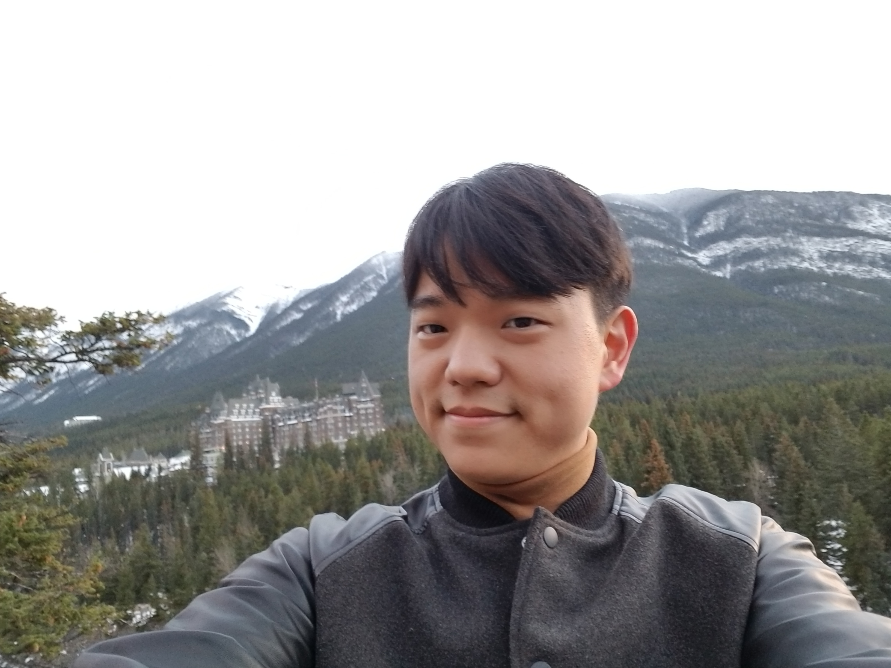

Changho Han

Postal address: Department of Mathematics, Harvard University, 1
Oxford Street., Cambridge, MA 02138
Email address: chhan (at) math (dot) harvard (dot) edu
Office: 431d Science Center
About me:
I am a fifth year graduate student
at Harvard University. Starting on Fall 2019, I will be a Limited Term Assistant Professor at the University of Georgia.
My research
is primarily in algebraic geometry. In particular, I am mainly interested in geometric and arithmetic properties of moduli spaces. See my
research statement for more details on my mathematical interests.
My graduate advisor is Joe Harris.
Here is my
CV.
Papers and preprints
Teaching
I have taught the following courses at Harvard:
- Math 1b, as a coaching fellow (integration, series and differential equations) which transitions into a teaching fellow, Spring 2019
- Math 1b, as a teaching fellow (integration, series and differential equations), Fall 2017
- Math 21b, as a teaching fellow (linear algebra and differential equations), Spring 2017
- Math 258Y, as a course assistant (graduate topics course on degenerations in algebraic geometry), Fall 2016
- Math 1b, as a teaching fellow (integration, series and differential equations), Fall 2015